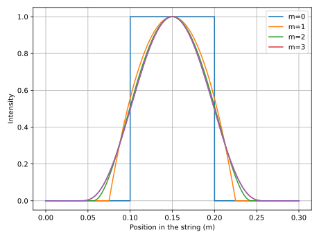

Guitar model
For more details, see
Physical model
\begin{equation}
\label{eq:model}
\mu \frac{\partial^2 u}{\partial t^2} = EI \Delta^2 u+ T \Delta\left(u + 2\eta\frac{\partial u}{\partial t} \right) - 2R \mu \frac{\partial u}{\partial t}
\end{equation}
String length is \(L\).
Losses
According to Chabassier, \(\eta \in [10^{-12}, 10^{-9}]\) and \(R \in [0.25, 4]\)
Numerical scheme
Modal decomposition in space
Order 2 implicit scheme in time
Radiation model
Attack
The attack is modeled by an ouside force of the form \[F(t, x) = F_0 f(t) p(x)-\epsilon \frac{\partial u}{\partial t}\]
where the term \(\epsilon \frac{\partial u}{\partial t}\) accounts for contact losses which occur between the plectrum and the string (cf. Chaigne),
otherwise there is a buzz when the same string is plucked twice in a short time.
For a plectrum of width \(2\delta\) the chosen profiles, depending on a regularisation integer \(m\), are given by, then the contribution to the force on each mode is given by
\[p(x) = \left(1-\left(\frac{x-x_0}{\delta_m}\right)^2 \right)^m \textrm{ if } x_0-\delta_m \le x \le x_0+\delta_m\]
where \(\delta_m\) is chosen such that \(\int_0^L p(x)dx = 1\) (the total force applied is normalised)

Concerning \(f\), we must ensure that \(\int_0^{\delta t} f(t)^2 dt\) is constant because this ensure the amount of energy given to the string is constant
cf. https://www.lam.jussieu.fr/Membres/Castellengo/publications/2013a_Le%20Carrou-SMAC_p.155-160.pdf
mieux encore :cf https://citeseerx.ist.psu.edu/document?repid=rep1&type=pdf&doi=06bf8594c6b9bd0634735a57b453f7a6401da30e